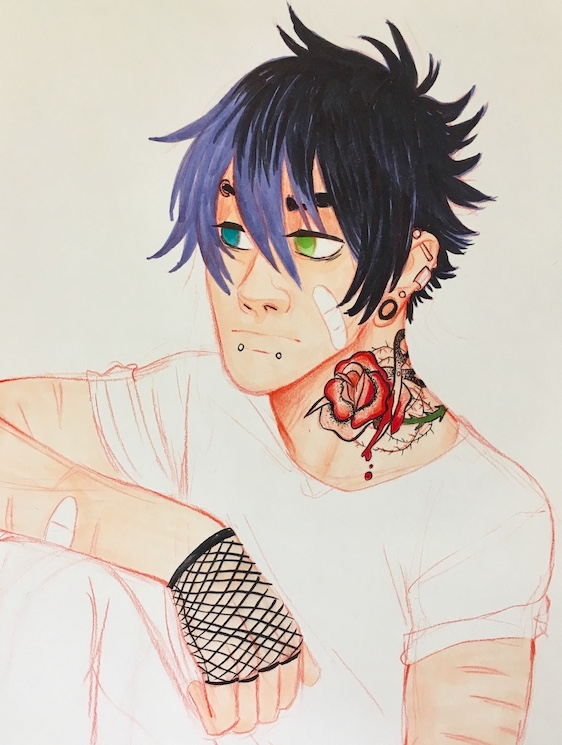
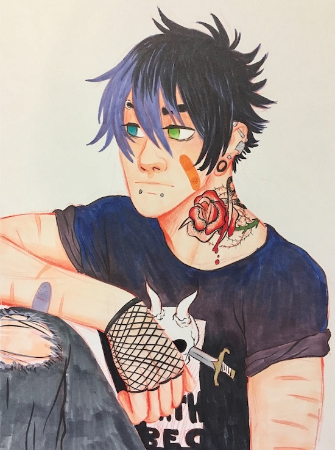

STEP ONE:
Gathering References!
When building an alt character, it's good to gather some references to draw from. You can make your own or find other sources. I chose a more "Emo" character, which was a popular fashion style and music scene when I was in high school. So I would be looking for things like:
- Pixie hairstyles
- Tattoos
- Piercings
- Dark, torn clothes
I often browse Google, Tumblr, or Pintrest for some quick ideas. I also like to walk around and see whats in the world around me. The best references come from your own experiences.
Back to Top
STEP TWO:
Drawing your character!
Now it's time to draw your character! I always start with a rough sketch, which I've done in a red Prismacolor pencil:

Notice how I've hit the key points with the rough sketch; a messy pixie cut to show that he "spends hours in front of the mirror, making his hair elegantly disheveled" (Admit it! by Say Anything), has multiple piercings, and a sick bleeding rose tattoo. These small details give him an "edge."
Next, I do a little bit of ink to help push some of the details/darks:

After that, I lay down a skin tone. I'm working with Copic markers, which are alcohol based markers. These are my favorite and when paired with colored pencil because they cause the colored pencil to smear and bleed which can be cool.

Next, I gave him some two toned eyes. Because every alt character is cooler with two colored eyes.

Now a little hair color and finishing off the tattoo...

And once we've got that all done, we finish off the clothes!

I chose to do and edgy band shirt (fictional, of course) as well as ripped jeans. I've also applied some bandaids for that "cute but tough" look. These little details will really tell a lot about your character. Think about their personality, who they are as a person.
Back to Top
STEP THREE:
Giving your character a name!
Now it's time to name our character. I often struggle with naming a character so I'll hit up the world wide web for some ideas!
I really like Biblical names and unisex names. I also really like boys who have names that are considered more "feminine" and girls with names that are more "masculine." I think it can bring a fun element to your character. But I'm going for a cooler name. A name that sounds like something a really BA character would be called.
I've decided to go with the name:
Cool, right?
Back to Top
STEP FOUR:
Give your character a back story!
Now that we've drawn a character and given him a name, what's he like? What's his backstory? When trying to create an interesting history of a character, I like to ask myself:
- What kind of story am I writing?
- What are the themes I'm wanting to explore in that story?
- What kind of character do I want to write?
There's many approaches you can take. For me, I often start with what kind of story do I want to write? This can be as simple as the genre, such as: horror, fantasy, sci, romance, etc. OR something more in depth, like a horror romance about a werewolf detective that keeps finding love in all the wrong places.
I then think about the themes I want to explore: gender, sexuality, spiritualism, racism, and/or other social issues or commentary.
Next, what kind of person am I looking to create? Think specially personality traits. Are they Quiet? Funny? Afraid of everything? A fun away to get some good ideas is to look at zodiac signs.
For example, Let's take Maddox here. Let's say he's:
What could make Maddox have these traits? It's possible he's stubborn because he learned it from his father. Maybe he's quiet because he's shy. And maybe he was encouraged to be creative because his mother was an artist. Notice how we already have a little history happening?
When exploring alternative characters, we often look at darker themes, though this isn't always the case. It can make for a more interesting story if your character has lost someone close to them or struggles with a mental illness. Just make sure you do your research and tread carefully.
TL;DR
Ask yourself: What kind fo story you're writing, what are the themes you'd like to explore, and what kind of character do you wanna write?
The most important part is that you have fun and get creative! Even bouncing ideas off of friends or family can help when buidling a character. Don't be afraid to use personal expierences to help make your character dynamic.
Back to Top